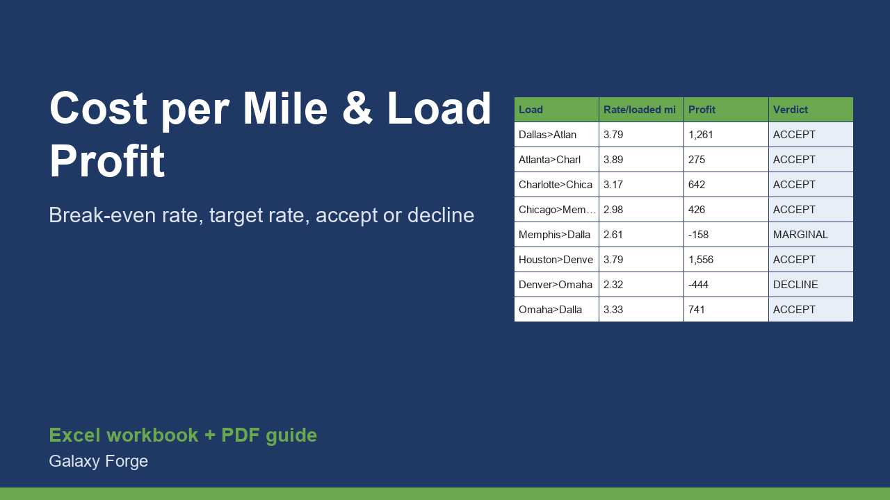

Turn your real monthly costs into a cost per mile and a break-even rate per loaded mile, then test every load before you accept it.
Most small trucking operations know their truck payment and fuel but not their cost per mile, so they accept loads that feel fine and quietly lose money on the empty miles. This model starts from your fixed monthly costs, your planned miles and your variable costs per mile, and returns a total cost per mile and the rate per LOADED mile you must earn to break even and to hit a profit target.
Then you enter each load (loaded miles, empty miles to reach it, linehaul, fuel surcharge and extras) and the sheet shows the revenue, the full cost, the profit, the profit per mile and a clear ACCEPT / MARGINAL / DECLINE verdict.
Your own pay is a cost line (owner draw), so the profit you see is what is left after you have paid yourself.
1) On Costs, replace the yellow cells with your real monthly fixed costs, your planned total miles per month and your variable costs per mile. 2) Read the break-even and target rates per loaded mile at the bottom of Costs. 3) On Loads, enter each load you are offered or ran: loaded miles, the empty miles to reach it, linehaul, fuel surcharge and extra pay. 4) Use the verdict column to accept, negotiate or decline, and the Summary to see the month.
Free guide: Owner-Operator Cost per Mile: The Formula and What Empty Miles Do to It
Price: $39, one-time. Download: owner_operator_cost_per_mile_load_profit.xlsx (Costs, Loads, Summary) and this guide. Works in Excel 2016 or later, Excel for Mac and Excel on the web; opens in Google Sheets and LibreOffice.
New product, listed 2026-11-05: no sales or reviews yet. Example figures in the workbook are illustrative.
This workbook is a calculation tool, not tax, legal, insurance or financial advice. Results are only as good as the costs and miles you enter; freight rates, fuel prices and regulations change, and your own accountant should set your tax treatment.